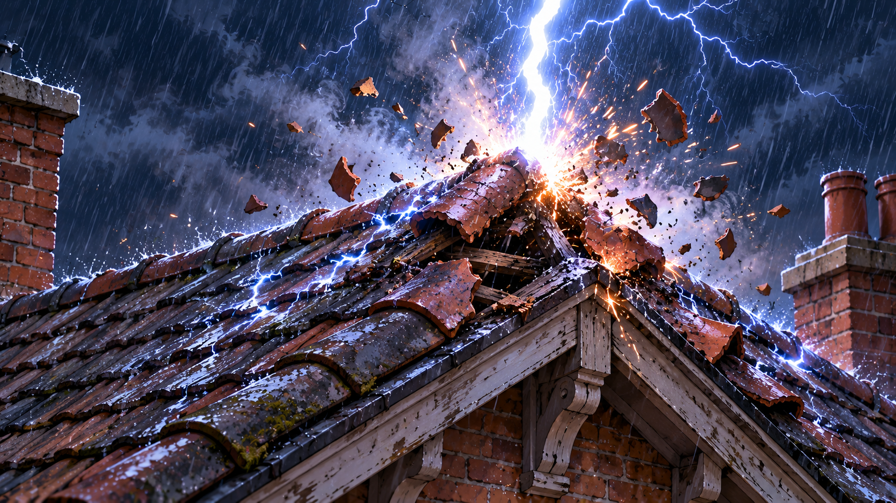

Build v0.1.0 · Prototype interne
Terminé
Prototype navigateur
- Écran d'accueil : son et cookie de sauvegarde
- Intros animées Groupe Tercium et logo du jeu
- Menu, options, chargement de partie
- Sauvegarde sur le navigateur ou par compte

Terminé
Cinématique d'ouverture
- L'orage sur Fournes-en-Weppes
- L'effondrement de la gare
- L'horloge qui se remet en marche
- Musique, pluie, tonnerre et vent

En cours
Acte 1 · Chapitre 1 « La panne »
- Écran titre de l'acte et arrivée à la résidence
- Chambre de Gisèle jouable, objets interactifs
- Énigmes et dialogues du chapitre

À venir
Suite de l'Acte 1
Nouveaux lieux, nouveaux personnages, nouvelles énigmes.
À venir
Démo publique
Un premier acte complet, ouvert d'abord aux inscrits de la liste d'attente.

Liste d'attente
Soyez parmi les premiers à monter à bord
Le prototype n'est pas encore ouvert au public. Inscrivez-vous pour y accéder en avant-première et suivre l'avancement du jeu.
Merci, vous êtes sur la liste. Nous vous écrirons dès l'ouverture du quai.